babynamesHere are the names of the columns: year, name, n and sex and the first few rows:
| year | name | n | sex |
|---|---|---|---|
| 1880 | Mary | 7065 | F |
| 1880 | Anna | 2604 | F |
| 1880 | Emma | 2003 | F |
| 1880 | Elizabeth | 1939 | F |
| 1880 | Minnie | 1746 | F |
| 1880 | Margaret | 1578 | F |
Counts of the numbers of males and females born (and registered) in 1880:
| sex | n |
|---|---|
| F | 942 |
| M | 1058 |
Counts the number of names for each sex by year:
| sex | year | n |
|---|---|---|
| F | 1880 | 942 |
| F | 1881 | 938 |
| F | 1882 | 1028 |
| F | 1883 | 1054 |
| F | 1884 | 1172 |
| F | 1885 | 1197 |
A caption
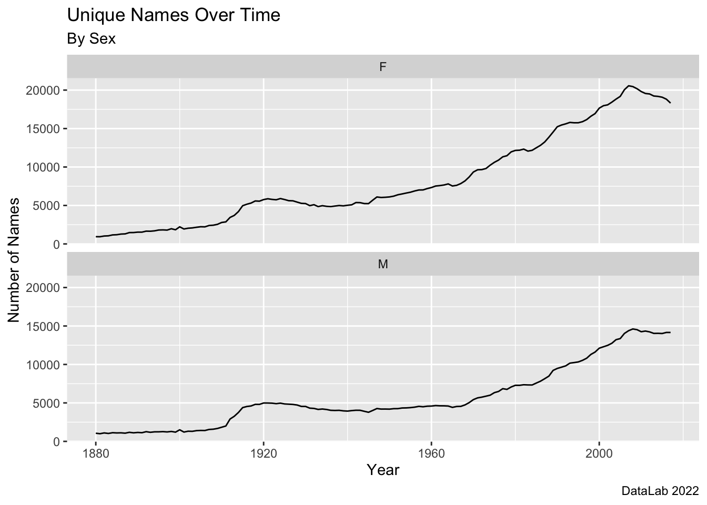
## # A tibble: 6 × 4
## year name n sex
## <dbl> <chr> <int> <chr>
## 1 1880 Mary 7065 F
## 2 1880 Anna 2604 F
## 3 1880 Emma 2003 F
## 4 1880 Elizabeth 1939 F
## 5 1880 Minnie 1746 F
## 6 1880 Margaret 1578 F## # A tibble: 6 × 3
## # Groups: year [3]
## year sex Babies
## <dbl> <chr> <int>
## 1 1880 F 90993
## 2 1880 M 110491
## 3 1881 F 91953
## 4 1881 M 100743
## 5 1882 F 107847
## 6 1882 M 113686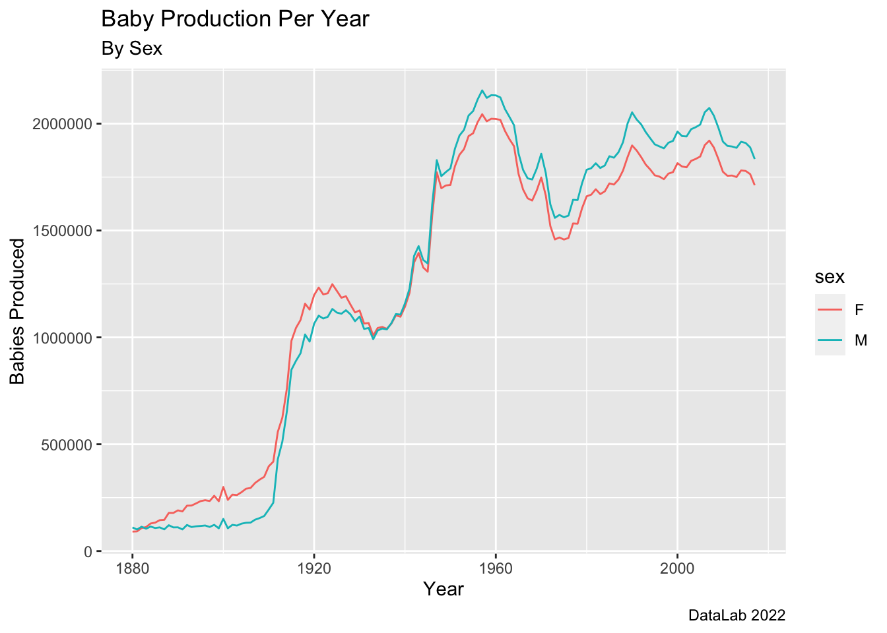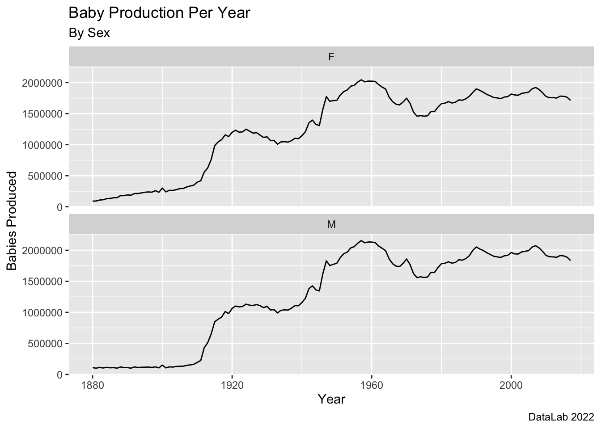
## # A tibble: 138 × 2
## year Total_Babies_Per_Year
## <dbl> <int>
## 1 1880 201484
## 2 1881 192696
## 3 1882 221533
## 4 1883 216946
## 5 1884 243462
## 6 1885 240854
## 7 1886 255317
## 8 1887 247394
## 9 1888 299473
## 10 1889 288946
## # … with 128 more rows## # A tibble: 1 × 1
## Total_Babies_Since_1880
## <int>
## 1 348120517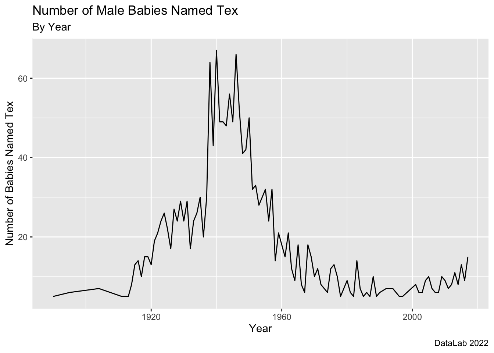
## # A tibble: 30,563 × 4
## year name n sex
## <dbl> <chr> <int> <chr>
## 1 2002 Jacob 30568 M
## 2 2002 Michael 28246 M
## 3 2002 Joshua 25986 M
## 4 2002 Matthew 25151 M
## 5 2002 Emily 24463 F
## 6 2002 Ethan 22108 M
## 7 2002 Andrew 22017 M
## 8 2002 Joseph 21891 M
## 9 2002 Madison 21773 F
## 10 2002 Christopher 21681 M
## # … with 30,553 more rows## # A tibble: 18,606 × 3
## # Groups: sex [2]
## sex name total
## <chr> <chr> <int>
## 1 M Michael 771991
## 2 M James 757250
## 3 M Robert 746569
## 4 M John 718240
## 5 M David 708922
## 6 F Mary 560076
## 7 M William 530335
## 8 M Richard 484237
## 9 F Linda 483880
## 10 F Patricia 411678
## # … with 18,596 more rows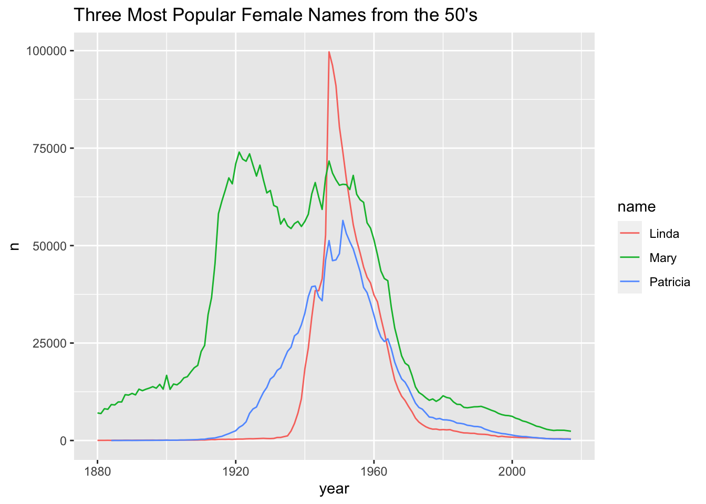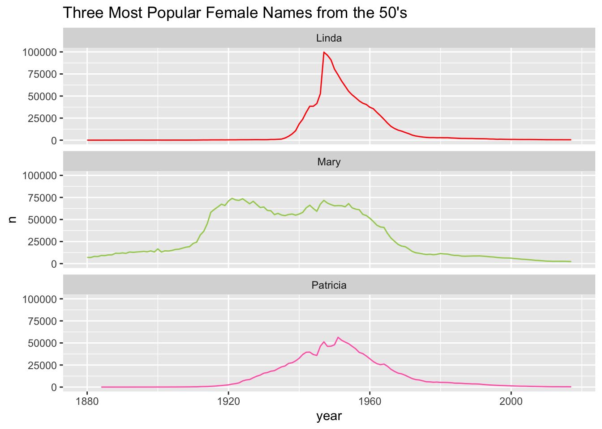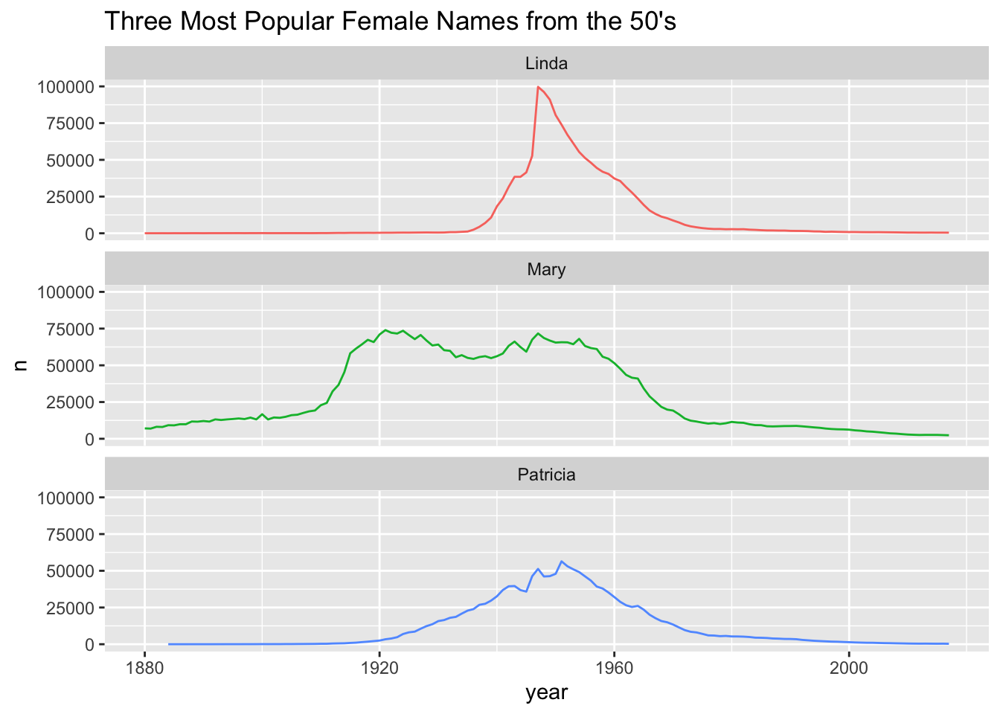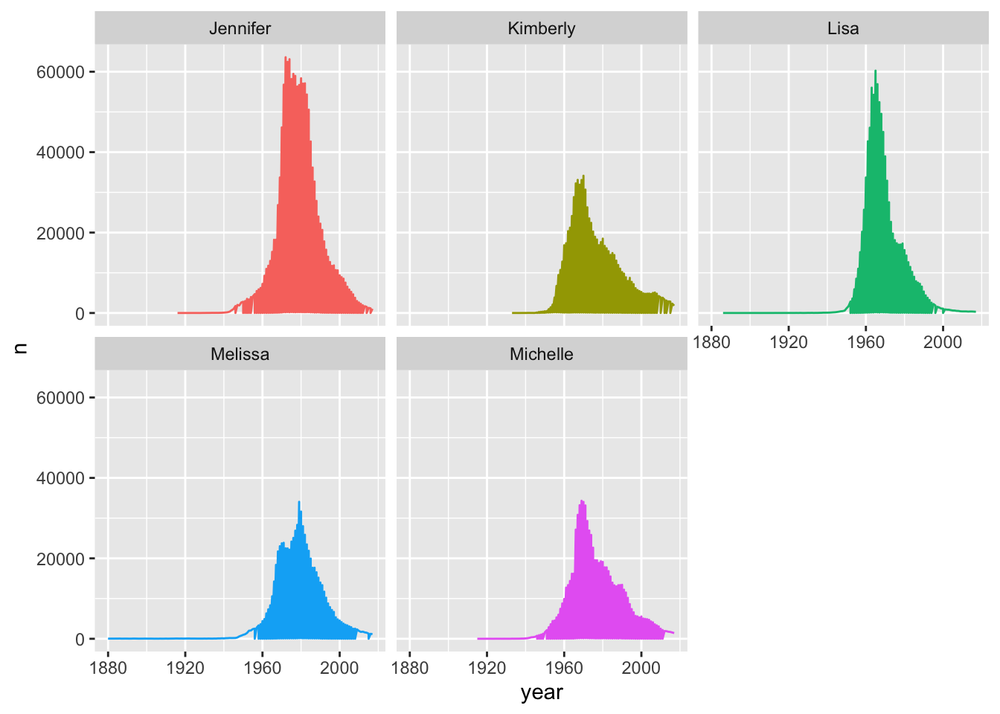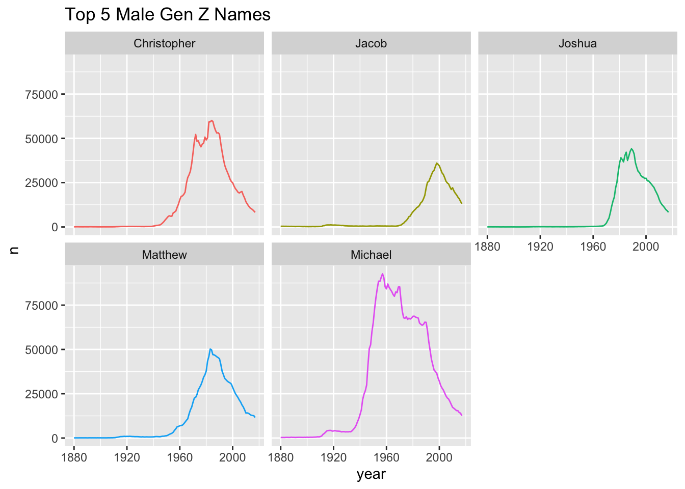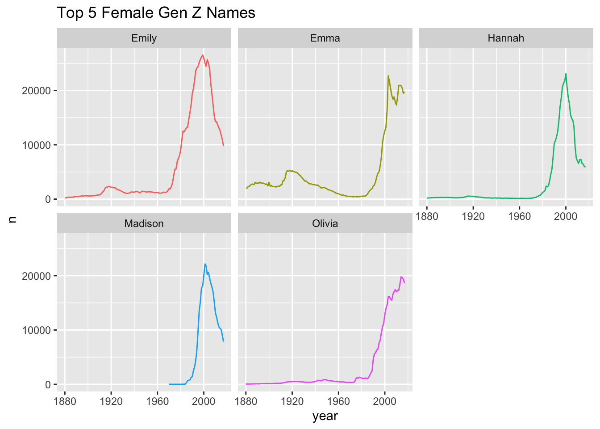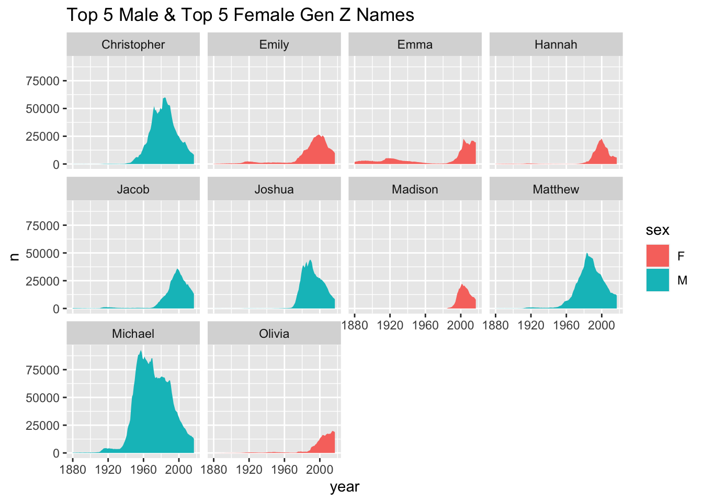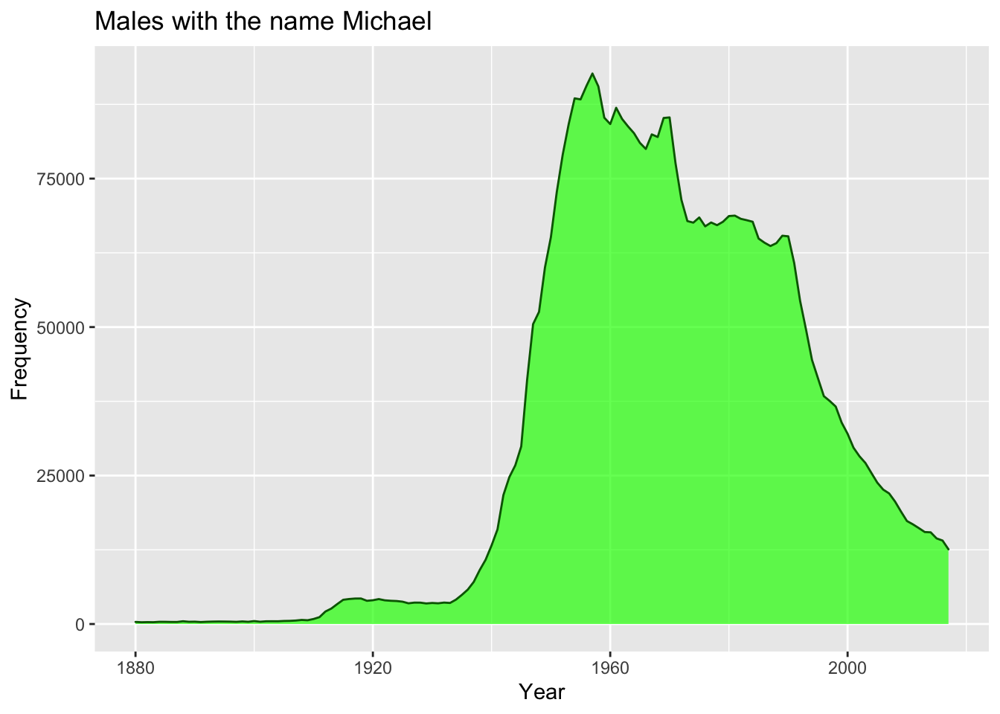